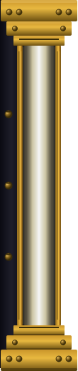
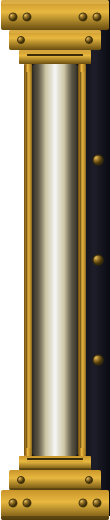

Est. in darkness.
A Windows notification tray application that monitors your Recycle Bin. The tray icon updates between empty and full states as files are deleted, giving you one-click access to empty all bins, view file counts, and open Explorer to the Recycle Bin.
View on GitHub →A full-stack application for managing and tracking physical storage items. A .NET Web API backend pairs with a React 18 frontend to let you organise storage locations, boxes, and items — with global search, QR code scanning via device camera, end-to-end AES-256-GCM image encryption with automated key rotation, and role-based access control. Deployable via Docker Compose with PostgreSQL.
View on GitHub →They have always been here — in the lamplight, in the hall, in the small hours when the house breathes and the darkness settles like velvet over everything. These are their portraits, and their names deserve to be spoken aloud.
She came to us in the winter of 2010, a foundling of shadow and wagging tail, born the same year she found her people. For thirteen winters Polly kept faithful watch — her dark coat a moving patch of night against whatever room she graced. She was patient where the world was hurried, warm where it ran cold. In the spring of 2023, when the masses in her stomach stole her ease, we made the hardest kindness and let her go. She is not gone. She is simply in the next room, waiting.
Born and adopted in the same year, Pixie arrived as though she had always meant to. She carries the warm brown of the Siberian wilderness in her coat and the stubborn brightness of a terrier in her eyes. She has already staked her claim on the warmest cushion, the loudest howl, and the largest portion of every heart in the house.
Mork arrived in 2025 in a whirlwind of ears too large for his head and opinions too numerous for his years. Shepherd, terrier, and something altogether his own — he regards the world with the philosophical suspicion of a creature certain that everything is edible until proven otherwise. He is, in short, a very good boy.
— click to turn the page —